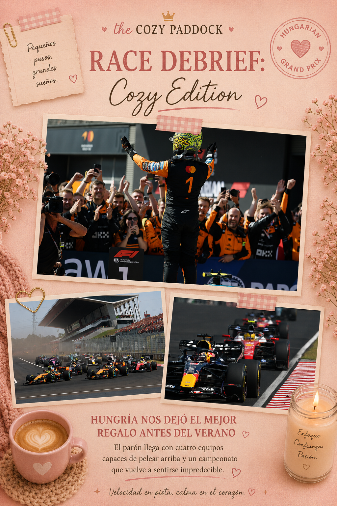

Hungría nos dejó el mejor regalo antes del verano
Hay carreras que se recuerdan por el ganador.
Otras, por un adelantamiento imposible.
Algunas, por un abandono inesperado.
Pero el Gran Premio de Hungría nos dejó algo mucho más valioso antes del parón de verano.
Nos devolvió la incertidumbre.
Y, en la Fórmula 1, eso siempre es una buena noticia.
Hace apenas unas semanas parecía que el campeonato empezaba a tomar un rumbo claro. Sin embargo, carrera tras carrera, la parrilla ha ido cambiando. Mercedes volvió a celebrar una victoria, Ferrari encontró el camino, y ahora McLaren también regresó a lo más alto. Mientras tanto, Red Bull recordó que nunca deja de ser un rival peligroso cuando Max Verstappen está al volante.
Hungría no solo cerró la primera mitad de la temporada.
Nos dejó muchísimas preguntas para cuando la Fórmula 1 regrese después del verano.
McLaren encontró la recompensa
Después de meses de trabajo, actualizaciones y fines de semana en los que la velocidad no siempre se traducía en resultados, McLaren finalmente consiguió convertir todo ese esfuerzo en una victoria.
Lando Norris salió desde la pole, perdió momentáneamente el liderato frente a Oscar Piastri en las primeras curvas y tuvo que construir su carrera con paciencia. Mientras por radio insistía en que tenía más ritmo, el equipo apostó por la estrategia. Cuando finalmente encontró pista libre, respondió con vueltas rápidas que terminaron definiendo el Gran Premio.
Al finalizar la carrera, Norris confesó que había sentido "uno de los mejores ritmos" de toda su trayectoria y que el coche había sido un placer conducir. No es casualidad. Las mejoras introducidas por McLaren parecen haber dado el resultado que el equipo llevaba meses esperando.
El único sabor amargo llegó del otro lado del garaje. Oscar Piastri lideró buena parte de la carrera, pero un contacto con Carlos Sainz y un posterior problema en la caja de cambios terminaron con un abandono que cambió completamente la historia del domingo.
Verstappen volvió a recordarnos quién es
Si alguien me preguntara cuál fue la actuación que más disfruté durante el fin de semana, probablemente no respondería con el nombre del ganador.
Respondería: Max Verstappen.
El neerlandés pasó buena parte de la carrera quejándose del comportamiento de su Red Bull. El coche estaba lejos de transmitirle confianza y las conversaciones por radio dejaban claro que no era el fin de semana ideal.
Y, aun así, hizo lo que hacen los grandes pilotos.
En las primeras vueltas protagonizó una intensa batalla con Lewis Hamilton, con un ligero contacto incluido que mantuvo a todos atentos. Más adelante regaló uno de esos adelantamientos que recuerdan por qué sigue siendo uno de los pilotos más espectaculares de la parrilla.
No ganó.
Pero convirtió un coche complicado en un segundo lugar.
Y eso también merece reconocimiento.
Ferrari sigue sumando, Mercedes sigue creciendo
Ferrari volvió a salir de Hungría con puntos importantes, aunque esta vez el protagonismo quedó ligeramente eclipsado por el ritmo de McLaren y la resistencia de Verstappen.
Lewis Hamilton cruzó inicialmente la meta en cuarta posición, pero una penalización de cinco segundos por exceso de velocidad en el pit lane lo relegó al quinto puesto, permitiendo que Charles Leclerc terminara cuarto.
Mientras tanto, Mercedes sigue encontrando motivos para sonreír.
Kimi Antonelli volvió a subir al podio y continúa consolidándose como una de las grandes revelaciones de la temporada.
George Russell, en cambio, vivió una carrera completamente diferente. Un problema con el sistema anti-stall en la salida lo hizo caer hasta la decimonovena posición. Desde allí protagonizó una sólida remontada para rescatar puntos antes del parón de verano.
Pequeñas historias que también cuentan
No todas las noticias importantes ocurren en el podio.
Aston Martin, por ejemplo, dejó una sensación mucho más positiva que en carreras anteriores. Lance Stroll terminó decimotercero y Fernando Alonso decimocuarto, resultados discretos, pero que muestran un coche más competitivo que hace apenas unas semanas.
En el extremo opuesto aparece Cadillac.
El equipo vuelve a marcharse de un Gran Premio con más frustraciones que respuestas. Valtteri Bottas abandonó por un problema relacionado con los frenos, mientras que Sergio Pérez también tuvo que retirarse por un fallo mecánico. El verano llega en un momento en el que la escudería necesita encontrar soluciones con urgencia.
Lo que nos deja Hungría
El Gran Premio de Hungría fue mucho más que la primera victoria de Lando Norris esta temporada.
Fue una fotografía perfecta del momento que vive la Fórmula 1.
McLaren confirmó que sus mejoras funcionan.
Red Bull demostró que Verstappen sigue siendo capaz de luchar incluso cuando el coche no está donde él quisiera.
Ferrari continúa siendo un rival constante.
Mercedes sigue consolidando el crecimiento de Antonelli.
Y detrás de ellos, equipos como Aston Martin empiezan a dar pequeños pasos hacia adelante, mientras otros, como Cadillac, todavía buscan respuestas.
Hace un mes parecía que la segunda mitad del campeonato podía estar escrita.
Hoy ya no estoy tan segura.
Y quizá ese sea el mejor regalo que Hungría podía dejarnos antes del parón de verano.
Porque cuando la Fórmula 1 vuelve a ser impredecible...
Todos salimos ganando.
About The Cozy Paddock
The Cozy Paddock es un espacio donde la Fórmula 1 se vive desde una perspectiva más suave y femenina.
Creado para chicas que quieren entender, disfrutar y experimentar el deporte de una forma simple, acogedora y bonita.
The Cozy Paddock is a space where Formula 1 meets a softer, more feminine perspective.
Created for girls who want to understand, enjoy, and experience the sport in a simple, cozy, and beautiful way.
Autoras

Mery Ramirez

Sheyla Franco

Mayra Torreblanca